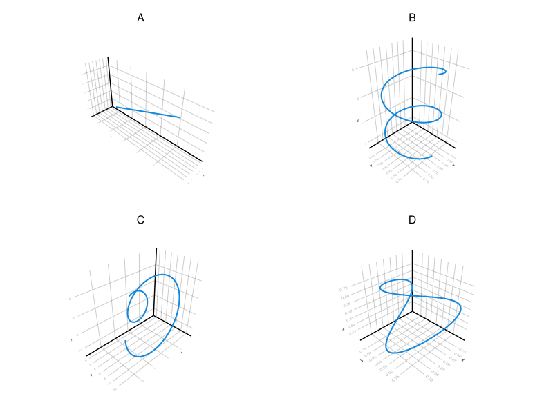

9 Funciones vectoriales
Ejercicio 9.1 Emparejar las siguientes funciones vectoriales con las trayectorias de más abajo.

\(\mathbf{f}(t) = (\operatorname{sen}(t), \cos(t), t/4)\)
\(\mathbf{g}(t) = \left(\frac{t}{2}+2, 2t-1, t+1\right)\)
\(\mathbf{h}(t) = (\cos(2t), \operatorname{sen}(t), \cos(t))\)
\(\mathbf{i}(t) = (t\cos(t), t, t\operatorname{sen}(t))\)
La gráfica A corresponde a \(\mathbf{g}(t)\).
La gráfica B corresponde a \(\mathbf{f}(t)\).
La gráfica C corresponde a \(\mathbf{i}(t)\).
La gráfica D corresponde a \(\mathbf{h}(t)\).
Ejercicio 9.2 Determinar la función vectorial cuya trayectoria coincide de la intersección del cilindro \(x^2+y^2=2\) y el plano \(2x-z=1\).
Como la proyección del cilindro de ecuación \(x^2+y^2=2\) sobre el plano \(xy\) es una circunferencia, podemos parametrizarla de la manera habitual haciendo \(x=\sqrt{2}\operatorname{sen}(t)\) e \(y=\sqrt{2}\cos(t)\) con \(0\leq t \leq 2\pi\).
Por otro lado, de la ecuación del plano se deduce que \(z = 2x-1\), y sustituyendo la parametrización anterior se tiene \(z = 2\sqrt{2}\operatorname{sen}(t)-1\).
Así pues, la función vectorial que resulta es
\[ \mathbf{f}(t) = \sqrt{2}\operatorname{sen}(t)\mathbf{i} + \sqrt{2}\cos(t)\mathbf{j} + (2\sqrt{2}\operatorname{sen}(t)-1)\mathbf{k} \quad 0\leq t \leq 2\pi. \]
Ejercicio 9.3 Dos aviones vuelan siguiendo las trayectorias dadas por las funciones vectoriales \(\mathbf{f}(t)=t^2\mathbf{i}+(2t+1)\mathbf{j}+t^3\mathbf{k}\) y \(\mathbf{g}(t)=(t-2)\mathbf{i}+\frac{t}{2}\mathbf{j}+(3t+10)\mathbf{k}\). ¿Se cortan sus trayectorias? ¿Llegarán a chocar en algún momento?
Para ver si las trayectorias de los dos aviones se cortan deben existir instantes \(t_1\) y \(t_2\) tales que \(f(t_1)=f(t_2)\), es decir,
\[\begin{align*} t_1^2 &= t_2-2\\ 2t_1+1 &= \frac{t_2}{2}\\ t_1^3 &= 3t_2+10 \end{align*}\]
Despejando \(t_2\) en la primera ecuación se tiene \(t_2 = t_1^2+2\) y sustituyendo en la segunda llegamos a
\[ 2t_1 + 1 = \frac{t_1^2+2}{2} \Leftrightarrow \frac{t_1^2}{2}-2t_1 = 0 \Leftrightarrow t_1\left(\frac{t_1}{2}-2\right)=0 \Leftrightarrow t_1 = 0 \mbox{ o } t_1 = 4. \]
Para \(t_1=0\) se tiene que \(t_2 = 0^2+2 = 2\), que no cumplen la tercera ecuación, ya que \(0^3=0\neq 3\cdot 2 +10 =16\). Y para \(t_1=4\) se tiene que \(t_2=4^2+2=18\), que sí cumple la tercera ecuación, ya que \(4^3 = 64 = 3\cdot 18 + 10\).
Así pues, para \(t_1=4\) y \(t_2=18\) se tiene que \(\mathbf{f}(4) = (16, 9, 64) = \mathbf{g}(18)\), por lo que las trayectorias de \(\mathbf{f}\) y \(\mathbf{g}\) se cortan en le punto \((16, 9, 64)\). Sin embargo, los aviones no llegan a colisionar ya que para ello los dos aviones deberían estar en ese punto en el mismo instante.
Ejercicio 9.4 Dadas dos funciones vectoriales \(\mathbf{f}\) y \(\mathbf{g}\) en \(\mathbb{R}^n\), demostrar que si existen su límites cuando \(t\to a\), entonces se cumplen las siguientes propiedades:
\(\displaystyle \lim_{t\to a} \mathbf{f}(t) + \mathbf{g}(t) = \lim_{t\to a} \mathbf{f}(t) + \lim_{t\to a} \mathbf{g}(t)\).
\(\displaystyle \lim_{t\to a} c\mathbf{f}(t) = c\lim_{t\to a} \mathbf{f}(t)\ \forall c\in\mathbb{R}\).
\(\displaystyle \lim_{t\to a} \mathbf{f}(t)\cdot \mathbf{g}(t) = \lim_{t\to a} \mathbf{f}(t) \cdot \lim_{t\to a} \mathbf{g}(t)\).
\(\displaystyle \lim_{t\to a} \mathbf{f}(t) \times \mathbf{g}(t) = \lim_{t\to a} \mathbf{f}(t) \times \lim_{t\to a} \mathbf{g}(t)\).
Ejercicio 9.5 Calcular los siguientes límites de funciones vectoriales.
\(\displaystyle \lim_{t\to 0} \left(t^2e^{-t}, \frac{\operatorname{tg}(t)}{t} \right)\).
\(\displaystyle \lim_{t\to \infty} \left(\frac{t^2+2t}{2t^2-1}, t\cos(t^{-1}), \frac{\operatorname{sen}(t^2)}{t} \right)\).
\[\begin{align*} \lim_{t\to 0} \left(t^2e^{-t}, \frac{\operatorname{tg}(t)}{t} \right) &= \left(\lim_{t\to 0} t^2e^{-t}, \lim_{t\to 0}\frac{\operatorname{tg}(t)}{t} \right) = (0, 1). \end{align*}\]
\[\begin{align*} \lim_{t\to \infty} \left(\frac{t^2+2t}{2t^2-1}, t\cos(t^{-1}), \frac{\operatorname{sen}(t^2)}{t} \right) &= \left(\lim_{t\to \infty} \frac{t^2+2t}{2t^2-1}, \lim_{t\to\infty} t\cos(t^{-1}), \lim_{t\to\infty} \frac{\operatorname{sen}(t^2)}{t} \right) \\ &= \left(\frac{1}{2}, \infty, 0\right) \end{align*}\]
Ejercicio 9.6 Calcular la derivada de las siguientes funciones vectoriales
\(\displaystyle \mathbf{f}(t)=\left(t^2e^{-t}, \frac{\operatorname{tg}(t)}{t} \right)\).
\(\displaystyle \mathbf{g}(t)= \left(\frac{t^2+2t}{2t^2-1}, t\cos(t^{-1}), \frac{\operatorname{sen}(t^2)}{t} \right)\).
\[\begin{align*} \mathbf{f}'(t) &= \left((t^2e^{-t})', \left(\frac{\operatorname{tg}(t)}{t}\right)' \right) = \left(-t^{2}e^{-t} + 2te^{-t}, \frac{\operatorname{tg}(t)^2 + 1}{t} - \frac{\operatorname{tg}(t)}{t^{2}}\right) \end{align*}\]
\[\begin{align*} \mathbf{g}'(t) &= \left(\left(\frac{t^2+2t}{2t^2-1}\right)',( t\cos(t^{-1}))', \left(\frac{\operatorname{sen}(t^2)}{t}\right)' \right) \\ &= \left(\frac{4t^3+8t^2}{(2t^2-1)^2}, \cos(t^{-1})+\frac{\operatorname{sen}(t^{-1})}{t}, 2\cos(t^2)-\frac{\operatorname{sen}(t^2)}{t^2}\right) \end{align*}\]
Ejercicio 9.7 Una partícula se mueve a lo largo de una curva \(y=\cos(2x+1)\), siendo \(x=t^2+1\) y \(t\) el tiempo en segundos. ¿Con qué velocidad está desplazándose respecto a las direcciones vertical y horizontal cuando \(t=2\) s?
Velocidad horizontal: \(\frac{dx}{dt} = 2t\) y en el instante \(t=2\), \(\frac{dx}{dt}(t=2)=4\).
Velocidad vertical: \(\frac{dy}{dt}=-\operatorname{sen}(2t^2+3)4t\) y en el instante \(t=2\), \(\frac{dy}{dt}=-8\operatorname{sen}(11)\).
Ejercicio 9.8 Un punto se mueve en el plano siguiendo una trayectoria
\[ \begin{cases} x = \operatorname{tg}(t), \\ y = t^2-2t+3. \\ \end{cases} \]
- Hallar \(\frac{dy}{dx}\) en \(t=0\).
- Hallar la tangente a la trayectoria en el punto \((0,3)\).
Se trata de la ecuación paramétrica de una función vectorial en el plano real.
Aplicando la regla de la cadena se tiene que
\[ \dfrac{dy}{dt} = \dfrac{dy}{dx}\dfrac{dx}{dt}, \]
en consecuencia, \[ \dfrac{dy}{dx}(t) = \frac{dy/dt}{dx/dt}(t)=\frac{2t-2}{1+\operatorname{tg}(t)^2}. \]
En el punto \(t=0\) tendremos
\[ \dfrac{dy}{dx}(0) = \frac{-2}{1+\operatorname{tg}(0)^2} = -2. \]
La ecuación de la recta tangente a la trayectoria en el punto \((x(t_0),y(t_0))\) correspondiente al instante \(t_0,\) viene dada por la expresión
\[ y-y(t_0) = \dfrac{dy}{dx}(t_0)(x-x(t_0)). \]
Como el punto \((0,3)\) se alcanza precisamente en el instante \(t=0\) tenemos que la ecuación de la recta tangente a la trayectoria en dicho instante es:
\[ y-y(0) = \dfrac{dy}{dx}(0)(x-x(0)), \]
es decir,
\[ y-3 = -2(x-0), \]
y simplificando obtenemos:
\[ y = 3-2x. \]
Ejercicio 9.9 Una partícula se mueve a lo largo de la curva
\[ \begin{cases} x = 2\operatorname{sen}(t), \\ y = \sqrt{3}\cos(t), \end{cases} \]
donde \(x\) e \(y\) están medidos en metros y el tiempo \(t\) en segundos.
Hallar la ecuación de la rectas tangente y normal a la trayectoria en el punto \((1,3/2)\).
¿Con qué velocidad se mueve la partícula respecto a las direcciones vertical y horizontal en dicho punto?
Sea \(\mathbf{f}(t)=(2\operatorname{sen}(t), \sqrt{3}\cos(t))\).
La partícula pasa por el punto \((1,3/2)\) en el instante \(t=\pi/6\), por lo que hay que calcular la ecuación de las rectas tangente y normal en ese instante.
La derivada de la función vectorial es
\[ \mathbf{f}'(t) = (2\cos(t), -\sqrt{3}\operatorname{sen}(t)), \]
y en el instante \(t=\pi/6\) vale
\[ \mathbf{f}'(\pi/6) = (2\cos(\pi/6), -\sqrt{3}\operatorname{sen}(\pi/6)) = \left(\sqrt{3},-\frac{\sqrt{3}}{2}\right). \]
Por tanto, la ecuación vectorial de la recta tangente a la trayectoria de \(\mathbf{f}\) en ese instante es
\[ \left(1,\frac{3}{2}\right)+ t\left(\sqrt{3},-\frac{\sqrt{3}}{2}\right) = \left(1+\sqrt{3}t,\frac{3-\sqrt{3}t}{2}\right), \]
y la de la recta normal
\[ \left(1,\frac{3}{2}\right)+ t\left(\frac{\sqrt{3}}{2},\sqrt{3}\right) = \left(1+\frac{\sqrt{3}}{2}t,\frac{3}{2}+\sqrt{3}t\right). \]
La velocidad con la que se mueve con respecto a la dirección horizontal es \(\frac{dx}{dt} (\pi/6) = x'(\pi/6) = \sqrt{3}\) m/s, y con respecto a la dirección vertical \(\frac{dy}{dt} (\pi/6) = y'(\pi/6) = -\frac{\sqrt{3}}{2}\) m/s.
Ejercicio 9.10 Determinar el ángulo con el que se cortan las trayectorias de las funciones vectoriales \(\mathbf{f}(t) = (2t+1, \sqrt{t}, t^2)\) y \(\mathbf{g}(t)=\left(\frac{t^2+6}{2}, e^{2t}, \cos(t)\right)\) en el punto \((3,1,1)\).
El ángulo con el que se cortan dos trayectorias es el ángulo que forman sus vectores tangentes en el punto de corte.
La primera función pasa por el punto \((3,1,1)\) en \(t=1\), mientras que la segunda pasa por este mismo punto en \(t=0\).
El vector tangente de \(\mathbf{f}(t)\) es
\[ \mathbf{f}'(t) = \left((2, \frac{1}{2\sqrt{t}}, 2t\right), \]
que en \(t=1\) vale \(\mathbf{f}'(1) = (2,1/2,2)\).
Por otro lado, el vector tangente de \(\mathbf{g}(t)\) es
\[ \mathbf{g}'(t) = (t, 2e^{2t}, -\operatorname{sen}(t)), \]
que en \(t=0\) vale \(\mathbf{g}'(0) = (0,2,0)\).
Para obtener el ángulo \(\theta\) que forman estos dos vectores, de la fórmula del producto escalar tenemos
\[ \cos(\theta) = \frac{(2,1/2,2)(0,2,0)}{|(2,1/2,2)||(0,2,0)|} = \frac{2\cdot 0+\frac{1}{2}\cdot 2+2\cdot 0}{\sqrt{2^2+\left(\frac{1}{2}\right)^2+2^2}\sqrt{0^2+2^2+0^2}} = \frac{1}{\sqrt{33}}, \]
de donde se deduce que \(\theta = \operatorname{arccos}(\frac{1}{\sqrt{33}}) = 1.3958\) rad.
Ejercicio 9.11 Una trayectoria pasa por el punto \((3,6,5)\) en el instante \(t=0\) con velocidad \(\mathbf{i}-\mathbf{k}\). Hallar la ecuación del plano normal y de la recta tangente en ese instante.
Plano normal: \(x-z+2=0\).
Recta tangente: \((3+t,6,5-t)\).
Ejercicio 9.12 Una partícula sigue la trayectoria
\[ \begin{cases} x=e^t,\\ y=e^{-t},\\ z=\cos(t), \end{cases} \quad t\in \mathbb{R} \]
hasta que se sale por la tangente en el instante \(t=0\). ¿Dónde estará en el instante \(t=3\)?
Recta tangente: \((1+t,1-t,1)\).
Posición en el instante \(t=3\): \((4,-2,1)\).
Ejercicio 9.13 Un móvil sigue la trayectoria en el espacio real dada por una función vectorial \(\mathbf{f}(t)\) con módulo constante. ¿Cómo es la trayectoria que describe? Demostrar que su vector velocidad es ortogonal al vector posición.
Supongamos que \(|\mathbf{f}(t)|=c\) \(\forall t\in \mathbb{R}\). Resulta sencillo ver el tipo de trayectoria que seguirá el móvil si pasamos a coordenadas esféricas. Al ser el módulo constante, independientemente del ángulo, la trayectoria estará inscrita en la esfera centrada en el origen de radio \(c\).
Para ver que su vector velocidad es ortogonal al vector de posición, se tiene que
\[ \mathbf{f}(t)\cdot \mathbf{f}(t) = |\mathbf{f}(t)|^2 = c^2, \]
que al ser constante, tendrá derivada nula, y por tanto,
\[ (\mathbf{f}(t)\cdot \mathbf{f}(t))' = \mathbf{f}(t)'\cdot \mathbf{f}(t) + \mathbf{f}(t)\cdot \mathbf{f}'(t) = 2 \mathbf{f}(t)'\cdot \mathbf{f}(t) = 0. \]
Así pues, el vector velocidad \(\mathbf{f}'(t)\) y el vector posición \(\mathbf{f}(t)\) son ortogonales ya que su producto escalar es nulo.
Ejercicio 9.14 Calcular la longitud de las trayectorias de las siguientes funciones vectoriales en los intervalos dados.
\(\mathbf{f}(t) = (t^2, \frac{t^3}{3})\) \(t\in[0,1]\).
\(\mathbf{g}(t) = (2\operatorname{sen}(t), \frac{t}{2}, 2\cos(t))\) \(t\in [-1, 1]\).
\(\mathbf{h}(t) = (\operatorname{sen}(t), \ln(\cos(t)), \cos(t))\) \(t\in[0,\pi/4]\).
\(\mathbf{f}'(t) = (2t, t^2)\) y la longitud de la trayectoria de \(\mathbf{f}(t)\) para \(t\in[0,1]\) es
\[\begin{align*} \int_0^1 |\mathbf{f}'(t)|\,dt &= \int_0^1 \sqrt{(2t)^2+(t^2)^2}\, dt = \int_0^1 \sqrt{t^4+4t^2}\, dt \\ &= \int_0^1 \sqrt{t^2(t^2+4)}\, dt = \int_0^1 t\sqrt{t^2+4}\,dt \\ &= \int_4^5 \frac{1}{2} \sqrt{u}\, du = \left[\frac{u^{3/2}}{3}\right]_4^5 \tag{$u=t^2+4$} \\ &= \frac{5^{3/2}}{3}-\frac{4^{3/2}}{3} \approx 1.0601. \end{align*}\]
\(\mathbf{g}'(t) = (2\cos(t), \frac{1}{2}, -2\operatorname{sen}(t))\) y la longitud de la trayectoria de \(\mathbf{g}(t)\) para \(t\in[-1,1]\) es
\[\begin{align*} \int_{-1}^1 |\mathbf{g}'(t)|\,dt &= \int_{-1}^1 \sqrt{(2\cos(t))^2+\left(\frac{1}{2}\right)^2+(-2\operatorname{sen}(t))^2}\, dt \\ &= \int_{-1}^1 \sqrt{\frac{1}{4}+4(\cos(t)^2+\operatorname{sen}(t)^2)}\, dt = \int_{-1}^1 \sqrt{\frac{1}{4}+4}\, dt \\ &= \int_{-1}^1 \sqrt{\frac{17}{4}}\, dt = \left[\frac{\sqrt{17}}{2}t\right]_{-1}^1 = \frac{\sqrt{17}}{2}+\frac{\sqrt{17}}{2} = \sqrt{17}. \end{align*}\]
\(\mathbf{h}'(t) = (\cos(t), -\operatorname{tg}(t), -\operatorname{sen}(t))\) y la longitud de la trayectoria de \(\mathbf{h}(t)\) para \(t\in[0,\pi/4]\) es
\[\begin{align*} \int_0^{\pi/4} |\mathbf{h}'(t)|\,dt &= \int_0^{\pi/4} \sqrt{\cos(t)^2+(-\operatorname{tg}(t))^2+(-\operatorname{sen}(t))^2}\, dt \\ &= \int_0^{\pi/4} \sqrt{1+\operatorname{tg}(t)^2}\, dt = \int_0^{\pi/4} \sqrt{\sec(t)^2}\, dt \\ &= \int_0^{\pi/4} \sec(t)\, dt = \int_0^{\pi/4} \sec(t)\frac{\sec(t)+\operatorname{tg}(t)}{\sec(t)+\operatorname{tg}(t)}\, dt \\ &= \int_{1}^{1+\frac{2}{\sqrt{2}}} \frac{1}{u}\, du = [\ln|u|]_1^{1+\frac{2}{\sqrt{2}}} \tag{1}\\ &= \ln\left|1+\frac{2}{\sqrt{2}}\right|-\ln|1| \approx 0.8814. \end{align*}\]
- Cambio de variable \(u=\sec(t)+\operatorname{tg}(t)\).
Ejercicio 9.15 Demostrar, usando la fórmula de la longitud de una trayectoria, que la longitud de la gráfica de una función real \(f(x)\) para \(a\leq x\leq b\) es
\[ \int_a^b \sqrt{1+f'(x)^2}\, dx. \]
Ejercicio 9.16 Dar una parametrización de una espiral de radio \(r\) centrada en el eje \(z\), que de \(n\) vueltas completas y la distancia entre cada dos vueltas consecutivas sea \(h\pi\). Deducir una fórmula para calcular su longitud. Utilizar la fórmula obtenida para calcular la cantidad de alambre necesario para construir la espiral de un cuaderno de 30 cm de altura con radio 1 cm y distancia entre cada dos vueltas consecutivas \(\frac{\pi}{4}\).
Una parametrización de esta espiral viene dada por la función \(\mathbf{f}(t) = (r\cos(t),r\operatorname{sen}(t),\frac{h}{2}t)\), con derivada \(\mathbf{f}'(t) = (-r\operatorname{sen}(t),r\cos(t), \frac{h}{2})\), por lo que su longitud en el intervalo \(t\in[a,b]\) es
\[\begin{align*} \int_a^b |\mathbf{f}'(t)|\,dt &= \int_a^b \sqrt{(-r\operatorname{sen}(t))^2+(r\cos(t))^2+\left(\frac{h}{2}\right)^2}\, dt \\ &= \int_a^b \sqrt{r^2+\frac{h^2}{4}}\, dt = \left[\frac{\sqrt{h^2+4r^2}}{2}t\right]_a^b = \frac{\sqrt{h^2+4r^2}}{2}(b-a). \end{align*}\]
Como la espiral da una vuelta completa cada \(2\pi\) unidades de \(t\), se tiene que \(b-a=2\pi n\), y por tanto la longitud de la espiral es \(n\sqrt{h^2+4r^2}\pi\).
Para calcular ahora la cantidad de alambre necesaria para construir la espiral del cuaderno, como la altura del cuaderno viene dada por la componente \(z\) de la función vectorial, se tiene que
\[ \frac{1/4}{2}t = 30 \Leftrightarrow t = 30 * 8 = 240 \]
por lo que la espiral del cuaderno es la trayectoria recorrida por la función vectorial en el intervalo \(t\in [0,240]\), que según la fórmula anterior es
\[ \frac{\sqrt{\frac{1}{4^2}+4}}{2}(240-0) = \frac{\sqrt{65}}{8}240 \approx 241.8677 \mbox{ cm}. \]
Ejercicio 9.17 Construir la parametrización de la longitud de arco de las trayectorias de las siguientes funciones vectoriales para \(t>0\).
\(\mathbf{f}(t)=(3t+1, 1-2t).\)
\(\mathbf{g}(t)=(e^t\operatorname{sen}(t), e^t\cos(t), 1)\)
- \(\mathbf{f}'(t)= (3,-2)\) y su módulo vale \(|\mathbf{f}'(t)|=\sqrt{3^2+(-2)^2} =\sqrt{13}\), por lo que su función longitud de arco para \(t>0\) es
\[ s(t) = \int_0^t |\mathbf{f}'(x)|\,dx = \int_0^t \sqrt{13}\,dx = [\sqrt{13}x]_0^t = \sqrt{13}t. \]
Tomando la inversa de la función longitud de arco \(t=\frac{s}{\sqrt{13}}\) y haciendo el cambio de variable en \(\mathbf{f}(t)\), llegamos a la parametrización de longitud de arco
\[ \tilde{\mathbf{f}}(s) = \left(\frac{3s}{\sqrt{13}}+1,1-\frac{2s}{\sqrt{13}}\right). \]
\(\mathbf{g}'(t)= (e^t(\operatorname{sen}(t)+\cos(t)), e^t(\cos(t)-\operatorname{sen}(t)), 0)\) y su módulo vale
\[\begin{align*} |\mathbf{g}'(t)| &= \sqrt{(e^t(\operatorname{sen}(t)+\cos(t)))^2 + (e^t(\cos(t)-\operatorname{sen}(t)))^2 + 0^2} \\ &= e^t\sqrt{\operatorname{sen}(t)^2+\cos(t)^2+2\operatorname{sen}(t)\cos(t) + \operatorname{sen}(t)^2+\cos(t)^2-2\operatorname{sen}(t)\cos(t)} \\ &= e^t\sqrt{2}, \end{align*}\]
por lo que su función longitud de arco para \(t>0\) es
\[ s(t) = \int_0^t |\mathbf{g}'(x)|\,dx = \int_0^t \sqrt{2}e^t\,dx = [\sqrt{2}e^t]_0^t = \sqrt{2}e^t-\sqrt{2}. \]
Tomando la inversa de la función longitud de arco
\[ s = \sqrt{2}e^t-\sqrt{2} \Leftrightarrow \sqrt{2}e^t = s+\sqrt{2} \Leftrightarrow e^t = \frac{s+\sqrt{2}}{\sqrt{2}} \Leftrightarrow t = \ln\left(\frac{s+\sqrt{2}}{\sqrt{2}}\right) \]
y haciendo el cambio de variable en \(\mathbf{g}(t)\), llegamos a la parametrización de longitud de arco
\[\begin{align*} \tilde{\mathbf{g}}(s) &= \left(e^{\ln\left(\frac{x+\sqrt{2}}{\sqrt{2}}\right)}\operatorname{sen}\left(\ln\left(\frac{x+\sqrt{2}}{\sqrt{2}}\right)\right) + e^{\ln\left(\frac{x+\sqrt{2}}{\sqrt{2}}\right)}\cos\left(\ln\left(\frac{x+\sqrt{2}}{\sqrt{2}}\right)\right), 1 \right) \\ &= \left(\frac{x+\sqrt{2}}{\sqrt{2}}\operatorname{sen}\left(\ln\left(\frac{x+\sqrt{2}}{\sqrt{2}}\right)\right) + \frac{x+\sqrt{2}}{\sqrt{2}}\cos\left(\ln\left(\frac{x+\sqrt{2}}{\sqrt{2}}\right)\right), 1 \right). \end{align*}\]
Ejercicio 9.18 Calcular la curvatura de las trayectorias de las siguientes funciones vectoriales en los puntos dados:
\(\mathbf{f}(t) = (t^2, \ln(t))\) en \(t=1\)
\(\mathbf{g}(t) = (\operatorname{sen}(2t), 3\cos(t), e^t)\) en \(t=0\).
Aunque se trata de una trayectoria en el plano real \(\mathbb{R}^2\), podemos trabajar en el espacio real \(\mathbb{R}^3\) añadiendo una tercera componente nula, es decir, considerando la función vectorial \(\mathbf{f}(t) = (t^2, \ln(t), 0)\).
La derivada de esta función vectorial es \(\mathbf{f}'(t) = (2t, 1/t, 0)\) y la derivada segunda es \(\mathbf{f}''(t) = (2, -1/t^2, 0)\). Por tanto, aplicando la fórmula de la curvatura en el espacio a \(\mathbf{f}(t)\) en \(t=1\) se tiene
\[\begin{align*} \kappa(1) &= \frac{|\mathbf{f}'(1)\times \mathbf{f}''(1)|}{|\mathbf{f}'(1)|^3} = \frac{|(2,1,0)\times (2,-1,0)|}{|(2,1,0)|^3} \\ & = \frac{|(0,0,-4)|}{(2^2+1^2)^{3/2}} = \frac{4}{5^{3/2}} \approx 0.358. \end{align*}\]
La derivada de esta función es
\[ g'(t) = (2\cos(2t), -3\operatorname{sen}(t), e^t), \]
y la derivada segunda es
\[ g''(t) = (-4\operatorname{sen}(2t), -3\cos(t), e^t). \]
Por tanto, aplicando la fórmula de la curvatura en el espacio a \(\mathbf{g}(t)\) en \(t=0\) se tiene
\[\begin{align*} \kappa(0) &= \frac{|\mathbf{g}'(0)\times \mathbf{g}''(0)|}{|\mathbf{g}'(0)|^3} = \frac{|(2,0,1)\times (0,-3,1)|}{|(2,0,1)|^3} \\ &= \frac{|(3,-2,-6)|}{(2^2+0^2+1^2)^{3/2}} = \frac{\sqrt{49}}{5^{3/2}} \approx 0.626. \end{align*}\]
Ejercicio 9.19 Calcular la curvatura de un círculo de radio \(r\).
Podemos suponer, sin pérdida de generalidad, que el círculo está centrado en el origen de coordenadas, por lo que una parametrización suya es la función vectorial \(\mathbf{f}(t) = (r\cos(t),r\operatorname{sen}(t))\).
La derivada de esta función vectorial es \(\mathbf{f}'(t)= (-r\operatorname{sen}(t), r\cos(t))\) y el vector tangente unitario
\[\begin{align*} \mathbf{T}(t) &= \frac{\mathbf{f}'(t)}{|\mathbf{f}'(t)|} = \frac{(-r\operatorname{sen}(t), r\cos(t))}{\sqrt{(-r\operatorname{sen}(t))^2 +(r\cos(t))^2}} \\ &= \frac{(-r\operatorname{sen}(t), r\cos(t))}{\sqrt{r^2(\operatorname{sen}(t)^2 +\cos(t)^2)}} =\frac{(-r\operatorname{sen}(t), r\cos(t))}{r} \\ &= (-\operatorname{sen}(t), \cos(t)). \end{align*}\]
Por tanto, aplicando la fórmula de la curvatura de una trayectoria, se tiene
\[\begin{align*} \kappa(t) &= \frac{|\mathbf{T}'(t)|}{|\mathbf{f}'(t)|} = \frac{|(-\cos(t), -\operatorname{sen}(t))|}{|(-r\operatorname{sen}(t), r\cos(t))|} \\ &= \frac{\sqrt{(-\cos(t))^2+(-\operatorname{sen}(t))^2}}{\sqrt{(-r\operatorname{sen}(t))^2 +(r\cos(t))^2}} = \frac{1}{r}. \end{align*}\]
Es decir, la curvatura de un círculo es el inverso de su radio.
Ejercicio 9.20 Usar la fórmula de la curvatura de la trayectoria de una función vectorial para obtener una fórmula para calcular la curvatura de la gráfica de una función real \(f(x)\).
Dada una función real \(y=f(x)\) podemos representar la trayectoria de su gráfica mediante la función vectorial \(\mathbf{f}(t) = (t, f(t), 0)\) en el espacio real. En tal caso, según la fórmula de la curvatura de una trayectoria en el espacio real, su curvatura es
\[ \kappa(t)= \frac{|\mathbf{f}'(t)\times \mathbf{f}''(t)|}{|\mathbf{f}'(t)|^3}. \]
Así pues, necesitamos la primera y la segunda derivada de la función vectorial, que son \(\mathbf{f}'(t)=(1,f'(t),0)\) y \(\mathbf{f}''(t) = (0, f''(t), 0)\) respectivamente, y su producto vectorial es
\[ \mathbf{f}'(t)\times \mathbf{f}''(t) = \begin{bmatrix} \mathbf{i} & \mathbf{j} & \mathbf{k}\\ 1 & f'(t) & 0\\ 0 & f''(t) & 0 \end{bmatrix} = f''(t)\mathbf{j} \]
Por tanto,
\[ \kappa(t)= \frac{|\mathbf{f}'(t)\times \mathbf{f}''(t)|}{|\mathbf{f}'(t)|^3} = \frac{|f''(t)|}{(1+f'(t)^2)^{3/2}}. \]
Ejercicio 9.21 Las coordenadas paramétricas de un punto material lanzado bajo un ángulo respecto al horizonte son
\[ \begin{cases} x=v_0t, & \\ y=-\frac{1}{2}gt^2 \end{cases} \]
donde \(t\in \mathbb{R}^{+}\) es el tiempo contado a partir del instante en que el punto llega a la posición más alta, \(v_0\) es la velocidad horizontal en el instante \(t=0\) y \(g=9.8\) m\(^2\)/s es la aceleración de la gravedad. ¿En qué instante la magnitud de la velocidad horizontal será igual a la de la velocidad vertical? ¿Cuánto debería valer \(v_0\) para que en dicho instante el punto haya recorrido 100 m horizontalmente? Calcular la ecuación de la recta tangente en dicho instante con el valor de \(v_0\) calculado.
La velocidad horizontal es la derivada del espacio recorrido horizontalmente (componente \(x\)) con respecto al tiempo, es decir,
\[ \frac{dx}{dt} = \frac{d}{dt}(v_0t)=v_0. \]
Del mismo modo, la velocidad vertical es la derivada del espacio recorrido verticalmente (componente \(y\)) en relación al tiempo,
\[ \frac{dy}{dt} = \frac{d}{dt}(-\frac{1}{2}gt^2)=-gt \]
Para ver en qué instante ambas magnitudes serán iguales, las igualamos y resolvemos la ecuación:
\[ \left|\frac{dx}{dt}\right|=\left|\frac{dy}{dt}\right| \Leftrightarrow v_0 = gt \Leftrightarrow t=\frac{v_0}{g}=\frac{v_0}{9.8}. \]
Para que en dicho instante el punto haya recorrido 100 m horizontalmente, debe cumplirse que \(x(v_0/9.8)=100\), de lo que se deduce:
\[ x(v_0/9.8)=v_0\frac{v_0}{9.8} = \frac{v_0^2}{9.8}=100 \Leftrightarrow v_0^2 = 980 \Leftrightarrow v_0 = +\sqrt{980}= 31.3. \]
Por tanto, el instance en cuestión es \(t=v_0/9.8= 31.3/9.8 = 3.19\).
Por último, la ecuación de la recta tangente en dicho instante, para el valor de \(v_0\) calculado es:
\[ y = y(3.19) + \frac{dy}{dx}(3.19) (x-x(3.19)) \]
Ya hemos visto que \(x(3.19)=100\), y que en dicho instante la velocidad horizontal y vertical coinciden, de manera que
\[ \frac{dy}{dx}(3.19)=\frac{dy/dt}{dx/dt}=-1, \]
de modo que sólo nos queda calcular el espacio vertical recorrido en dicho instante, que es
\[ y(3.19)=-\frac{1}{2}9.8\cdot 3.19^2= -49.86. \]
Sustituyendo en la ecuación anterior llegamos a la recta tangente:
\[ y = -49.86-(x-100) \Leftrightarrow y=-x+50.14. \]
Ejercicio 9.22 Una avión parte de la posición \(\mathbf{f}(0)=(1, 1, 1)\) con velocidad inicial \(\mathbf{v}(0)=(0,1,-2)\) y aceleración \(\mathbf{a}(t)=t^2\mathbf{i}-\frac{1}{2}\mathbf{j}+2\mathbf{k}\). Determinar el vector velocidad y el vector posición en cada instante.
La velocidad en cada instante es la integral de la aceleración, es decir,
\[\begin{align*} v(t) &= v(0) + \int_0^t a(x)\,dx = (0,1,-2) + \int_0^t (x^2,-1/2,2)\,dx \\ &= (0,1,-2) + (\frac{t^3}{3},\frac{-t}{2},2t) = \left(\frac{t^3}{3},\frac{-t}{2}+1,2t-2\right). \end{align*}\]
Y la posición en cada instante es la integral de la velocidad, es decir,
\[\begin{align*} f(t) &= f(0) + \int_0^t v(x)\,dx = (1,1,1) + \int_0^t (x^3/3,-x/2+1,2x-2)\,dx \\ &= (1,1,1) + (\frac{t^4}{12},\frac{-t^2}{4}+t, t^2-2t) = \left(\frac{t^4}{12}+1,\frac{-t^2}{4}+t,1+t^2-2t\right). \end{align*}\]
Ejercicio 9.23 Calcular la rapidez máxima y mínima con la que se mueve una partícula cuya posición viene dada por la función vectorial \(\mathbf{f}(t) = \cos(2t)\mathbf{i} + \operatorname{sen}(t)\mathbf{j} + \cos(t))\mathbf{k}\) en el intervalo \([0,\pi)\).
El vector velocidad vale
\[ \mathbf{v}(t) = \mathbf{f}'(t) = (-2\operatorname{sen}(2t), \cos(t), -\operatorname{sen}(t)), \]
y la rapidez con la que se mueve la partícula es su módulo
\[ |\mathbf{v}(t)| = \sqrt{(-2\operatorname{sen}(2t))^2 + \cos(t)^2 + (-\operatorname{sen}(t))^2} = \sqrt{4\operatorname{sen}(2t)^2+1}. \]
Para ver cuándo la rapidez es máxima o mínima tenemos que calcular la derivada de esta función e igualarla a cero para obtener sus puntos críticos.
\[ |\mathbf{v}(t)|' = \frac{8\operatorname{sen}(2t)\cos(2t)}{\sqrt{4\operatorname{sen}(2t)^2+1}} = 0 \Leftrightarrow \operatorname{sen}(2t)\cos(2t) = 0. \]
Por tanto la derivada se anula si \(\operatorname{sen}(2t)=0\) o \(\cos(2t)=0\), que en el intervalo \([0,\pi)\) se cumple para \(t=0\), \(t=\pi/4\), \(t=\pi/2\) y \(t=3\pi/4\).
Para ver si en cada uno de estos instantes hay un máximo, mínimo o punto de inflexión, estudiamos el signo de la derivada en instantes próximos anteriores y posteriores.
- En instantes anteriores a \(t=0\) \(\operatorname{sen}(2t)<0\) y \(\cos(2t)>0\) por lo que \(|\mathbf{v}(t)|'<0\), y en instantes posteriores \(\operatorname{sen}(2t)>0\) y \(\cos(2t)>0\) por lo que \(|\mathbf{v}(t)|'>0\), y por tanto, hay un mínimo relativo en \(t=0\).
- En instantes anteriores a \(t=\pi/4\) \(\operatorname{sen}(2t)>0\) y \(\cos(2t)>0\) por lo que \(|\mathbf{v}(t)|'>0\), y en instantes posteriores \(\operatorname{sen}(2t)>0\) y \(\cos(2t)<0\) por lo que \(|\mathbf{v}(t)|'<0\), y por tanto, hay un máximo relativo en \(t=0\).
- En instantes anteriores a \(t=\pi/2\) \(\operatorname{sen}(2t)>0\) y \(\cos(2t)<0\) por lo que \(|\mathbf{v}(t)|'<0\), y en instantes posteriores \(\operatorname{sen}(2t)<0\) y \(\cos(2t)<0\) por lo que \(|\mathbf{v}(t)|'>0\), y por tanto, hay un mínimo relativo en \(t=0\).
- En instantes anteriores a \(t=3\pi/4\) \(\operatorname{sen}(2t)<0\) y \(\cos(2t)<0\) por lo que \(|\mathbf{v}(t)|'>0\), y en instantes posteriores \(\operatorname{sen}(2t)<0\) y \(\cos(2t)>0\) por lo que \(|\mathbf{v}(t)|'<0\), y por tanto, hay un máximo relativo en \(t=0\).
Ejercicio 9.24 Calcular las componentes tangencial y normal del vector aceleración de las siguientes funciones vectoriales.
- \(f(t) = (2\cos(t), \operatorname{sen}(2t))\).
- \(g(t) = (3t^2, 2t^3, \ln(t))\).
Ejercicio 9.25 Calcular la fuerza necesaria para que la partícula de masa \(m\) se mueva con posición dada por la función vectorial \(g(t) = (3t, \ln(t), t^2)\). ¿Cómo se interpreta este vector?
El vector velocidad es
\[ \mathbf{v}(t) = \mathbf{f}'(t) = \left(3, \frac{1}{t}, 2t\right), \]
y el vector aceleración es
\[ \mathbf{a}(t) = \mathbf{f}''(t) = \left(0, \frac{-1}{t^2}, 2\right). \]
Por tanto, la fuerza necesaria para imprimir esta aceleración a una partícula de masa \(m\) en cada instante \(t\) es
\[ \mathbf{F}(t) = m \mathbf{a}(t) = \left(0, \frac{-m}{t^2}, 2m\right). \]
Esto quiere decir que no hay que aplicar fuerza en el sentido del eje \(x\), una fuerza inversamente proporcional al cuadrado del tiempo en la dirección opuesta al eje \(y\) y una fuerza constante del doble de la masa en la dirección del eje \(z\).
Ejercicio 9.26 Se aplica una fuerza de \(2\) N a una pelota de \(100\) g en el sentido de la bisectriz del plano \(yz\). Si la pelota parte del origen de coordenadas con una velocidad inicial \(\mathbf{v}_0 = 2\mathbf{i}-\mathbf{j}\) m/s, ¿qué posición y con qué rapidez se moverá la pelota en cada instante?
Un vector con la dirección de la bisectriz del plano \(yz\) es \((0,1,1)\), de manera que un vector unitario en esa dirección será \(\mathbf{u}=\left(0,\frac{1}{\sqrt{2}},\frac{1}{\sqrt{2}}\right)\), y como la intensidad de la fuerza es 2 N, se tiene que el vector fuerza es
\[ \mathbf{F}(t) = \left(0,\frac{2}{\sqrt{2}},\frac{2}{\sqrt{2}}\right) = (0, \sqrt{2},\sqrt{2}). \]
Como por la segunda ley de Newton \(\mathbf{F}(t)=m\mathbf{a}(t)\), se tiene que
\[ \mathbf{a}(t) = \frac{\mathbf{F}(t)}{m} = \frac{(0, \sqrt{2},\sqrt{2})}{0.1} = (0, 10\sqrt{2}, 10\sqrt{2}). \]
Integrando el vector aceleración obtenemos el vector velocidad
\[ \mathbf{v}(t) = \int \mathbf{a}(t)\, dt = \int (0, 10\sqrt{2}, 10\sqrt{2})\, dt = (0, 10\sqrt{2}t, 10\sqrt{2}t) + C. \]
Como en el instante \(t=0\) la velocidad es \(\mathbf{v}_0\), se tiene que
\[ \mathbf{v}(0) = (0, 10\sqrt{2}\cdot 0, 10\sqrt{2}\cdot 0) + C = (0,0,0) + C = C = \mathbf{v}_0, \]
por lo que el vector velocidad es
\[ \mathbf{v}(t) = (0, 10\sqrt{2}t, 10\sqrt{2}t) + \mathbf{v}_0 = (0, 10\sqrt{2}t, 10\sqrt{2}t) + (2, -1, 0) = (2, 10\sqrt{2}t-1, 10\sqrt{2}t). \]
Ahora integrando el vector velocidad obtenemos el vector de posición de la pelota.
\[ \mathbf{f}(t) = \int \mathbf{v}(t)\,dt = \int (2, 10\sqrt{2}t-1, 10\sqrt{2}t)\, dt = (2t, 5\sqrt{2}t^2-t, 5\sqrt{2}t^2) + C \]
Como la pelota parte del origen de coordenadas, \(f(0)=(0,0,0)\), por lo que
\[ \mathbf{f}(0) = (0, 5\sqrt{2}\cdot 0^2-0, 5\sqrt{2}\cdot 0^2) + C = (0, 0, 0) + C = C = (0, 0, 0), \]
por lo que, finalmente, el vector de posición es \(\mathbf{f}(t)=(2t, 5\sqrt{2}t^2-t, 5\sqrt{2}t^2)\) m, y su rapidez
\[ |\mathbf{v}(t)| = \sqrt{2^2 + (10\sqrt{2}t-1)^2 + (10\sqrt{2}t)^2}. \]
Ejercicio 9.27 Un atleta lanza la jabalina con un ángulo \(\theta\) sobre la horizontal y una velocidad inicial \(\mathbf{v}_0\). Suponiendo que la única fuerza que actúa sobre ella es la de la gravedad, ¿qué distancia horizontal alcanzará la jabalina? ¿Qué valor de \(\theta\) maximiza la distancia horizontal recorrida?
Ejercicio 9.28 La cantidad de árboles en un ecosistema, \(a\), depende del tiempo según la expresión
\[ a(t)=100\ln(t^2+1), \]
y la cantidad de un determinado parásito de los árboles, \(p\), que también depende del tiempo, viene dada por
\[ p(t) = \sqrt[3]{{t^2 + 2}}. \]
Calcular el número de parásitos cuando el número de árboles sea 500.
La derivada del número de parásitos con respecto al número de árboles cuando el número de parásitos sea 3. ¿Cómo la interpretarías?
Para ver en qué instante hay 500 árboles, resolvemos la ecuación
\[\begin{align*} a(t) = 500 &\Leftrightarrow 100\ln(t^2+1) = 500 \Leftrightarrow \ln(t^2+1) = 5 \\ &\Leftrightarrow t^2+1 = e^5 \Leftrightarrow t^2 = e^5-1 \Leftrightarrow t = \sqrt{e^5-1} \approx 12.1414. \end{align*}\]
Por tanto, el número de parásitos en ese instante es
\[ p(\sqrt{e^5-1}) = \sqrt[3]{(\sqrt{e^5-1})^2 + 2} = \sqrt[3]{e^5-1 + 2} = \sqrt[3]{e^5+1} \approx 5.3064. \]
Para ver en qué instante hay 3 parásitos, resolvemos la ecuación
\[ p(t) = 3 \Leftrightarrow \sqrt[3]{t^2+2} = 3 \Leftrightarrow t^2+2 = 3^3 \Leftrightarrow t^2 = 27-2 \Leftrightarrow t = \sqrt{25} = 5. \]
Por otro lado, la derivada del número de parásitos con respecto al número de árboles es
\[ \frac{dp}{da} = \frac{dp/dt}{da/dt} = \frac{\frac{2t}{3(t^2+2)^{2/3}}}{\frac{200t}{t^2+1}}, \]
y en el instante \(t=5\) se tiene
\[ \frac{dp}{da}(5) = \frac{\frac{2\cdot 5}{3(5^2+2)^{2/3}}}{\frac{200\cdot 5}{5^2+1}} = \frac{\frac{10}{27}}{\frac{1000}{26}} \approx 0.0096. \]
Eso quiere decir que por cada parásito más que haya en el ecosistema, el número de árboles aumenta en \(0.0096\).